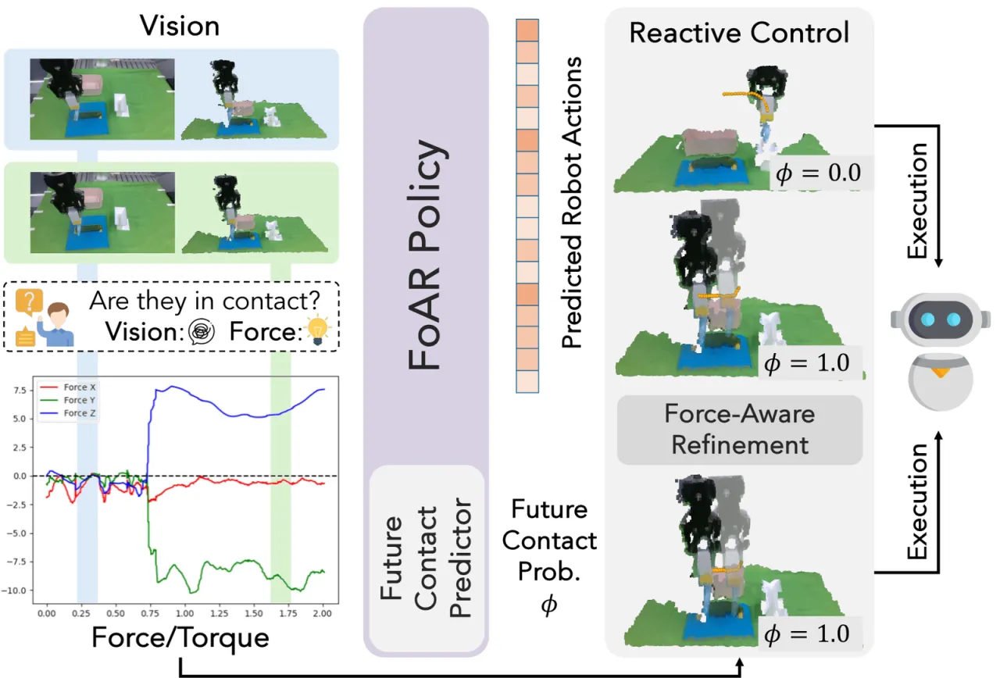
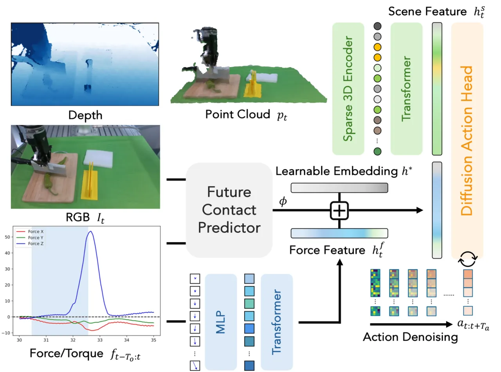
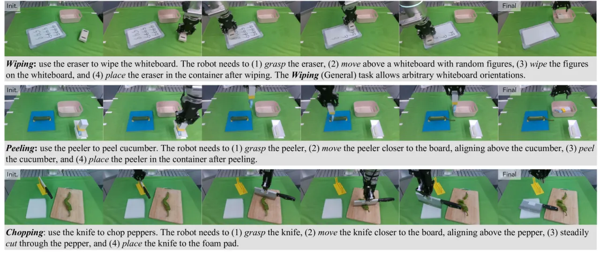

纯视觉策略难以区分"接触/非接触"状态，在擦写、削皮、切菜这类 contact-rich 任务上表现不稳。FoAR 在 RISE 策略基础上引入高频 force/torque 感知，用一个 future contact predictor 预测未来是否接触，据此在非接触段与接触段之间动态调节力信息的使用权重，并配合 reactive control 用简单位置控制完成精细接触操作，在所有任务上显著超越 baseline。
Contact-rich 任务（擦、削、切）对策略提出双重挑战：接触动力学复杂、且需要精确控制。纯视觉策略往往缺少像 force/torque 这样的关键接触反馈模态——单看图像很难判断工具与物体"到底接没接触上"，导致要么悬空空扫、要么用力过猛。
"Vision-based policies often struggle with the skill required for such tasks, as they typically lack critical contact feedback modalities like force/torque information."

FoAR 建立在 real-world 模仿策略 RISE 之上：point cloud 经 sparse 3D encoder + transformer 得到 scene feature，再由 diffusion action head 输出动作序列。FoAR 在此之上并联一条 force/torque 分支，并用 future contact predictor 把两条模态"按需"融合。

采集高频 force/torque 数据（100Hz、约 200 个时间步 ≈ 2 秒），先经 3 层 MLP 得到 512 维 force token，再用带 sinusoidal positional encoding 的 transformer 编码为 force feature htf。相比只在末端拼一个瞬时力向量，这样保留了力信号随时间的变化趋势。
用 ResNet18 视觉编码器 + MLP 力编码器，输出接触概率 φ ∈ [0,1]，表示未来 ±2 秒窗口内发生接触的可能性。它是整个策略"何时相信力信息"的开关。
融合特征把 scene feature 与 [φ × force feature + (1−φ) × learnable neutral embedding h*] 拼接。非接触段 φ→0，力分支被中性 embedding 顶替，避免噪声力信号干扰；接触段 φ→1，力信息被充分使用。由此实现"在非接触段与接触段之间动态调节 force/torque 数据的使用"。
部署时的反应式修正：当预测接触概率超过阈值（δφ=0.9）但检测到的力/力矩不足（δf=8N、δt=5N·m）时，沿估计方向对预测动作做一个小位移修正（ε=0.006m）。这让 FoAR "仅用简单的 position control" 也能把接触压实到位，而无需显式的力控/阻抗控制器。
在真实机器人上设计 3 类 contact-rich 任务——Wiping（擦白板，含 General 任意朝向变体）、Peeling（削黄瓜皮）、Chopping（切辣椒），每个任务都包含非接触段与接触段。指标为分阶段平均成功率 ASR(%) 与综合任务 score。Baseline 为 RISE 及其两个融合力信息的变体 RISE (force-token) / RISE (force-concat)。

| Method | Wiping score | Wiping (General) score | Peeling score | Peeling ASR |
|---|---|---|---|---|
| RISE | 0.500 | 0.500 | 0.377 | 50% |
| RISE (force-token) | 0.575 | 0.600 | 0.487 | 75% |
| RISE (force-concat) | 0.475 | — | 0.524 | 80% |
| FoAR (ours) | 0.875 | 0.850 | 0.756 | 100% |
FoAR 在三项 score 上均大幅领先，Wiping 的 wipe 阶段 ASR 达 100%（RISE 仅 75%），Peeling 的 peel 阶段 ASR 达 100%（RISE 仅 50%）。简单地把力"塞进"RISE（force-token / force-concat）虽有小幅提升，但远不及 φ 引导的动态融合。
| Method | # Segments | Norm. Length Avg. | Norm. Length Std. | Place ASR |
|---|---|---|---|---|
| RISE | 1.8 ± 0.6 | 0.727 | 0.411 | 30% |
| FoAR (ours) | 3.9 ± 0.9 | 0.353 | 0.094 | 70% |
切辣椒任务鼓励切成若干均匀小段且不因半切而粘连：FoAR 平均切出 3.9 段（RISE 1.8 段），切段长度更短更均匀（Avg 0.353、Std 0.094，均优于 RISE），说明力反馈帮助刀"切透"。
| Method | Score | Wipe ASR |
|---|---|---|
| FoAR w/o Reactive Control | 0.650 | 80% |
| FoAR w/ Reactive Control | 0.850 | 100% |
去掉 reactive control 后 score 从 0.850 降到 0.650、wipe ASR 从 100% 降到 80%，验证了反应式位置修正的作用。鲁棒性测试中，面对重写、移动白板及组合扰动，FoAR 维持 0.80–0.85 的 score，而 RISE 仅维持 0.50–0.60。
FoAR 目前仅用 simple position control + reactive refinement 完成接触任务。作者指出未来可引入更先进的控制策略，如 compliance control、hybrid force/position control 来处理更复杂的接触。
实验为单臂机械臂上的 3 类任务。作者提出可扩展到 dual-arm 或 humanoid 机器人以完成更复杂任务；当前泛化到全新任务类别的能力未被验证。
reactive control 依赖 δφ=0.9、δf=8N、δt=5N·m、ε=0.006m 等手工设定的阈值，且 φ 预测器需要额外训练；这些超参在不同硬件/任务上可能需重新标定。